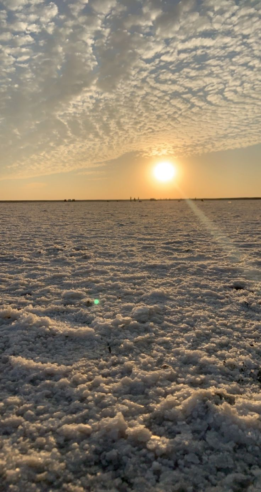
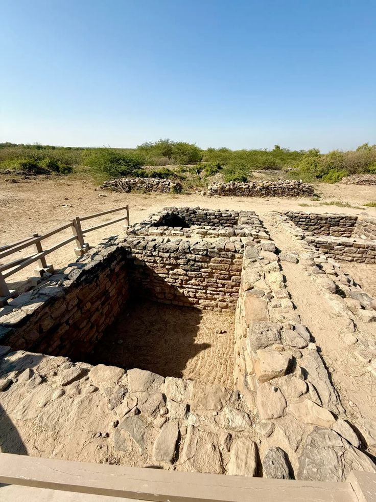
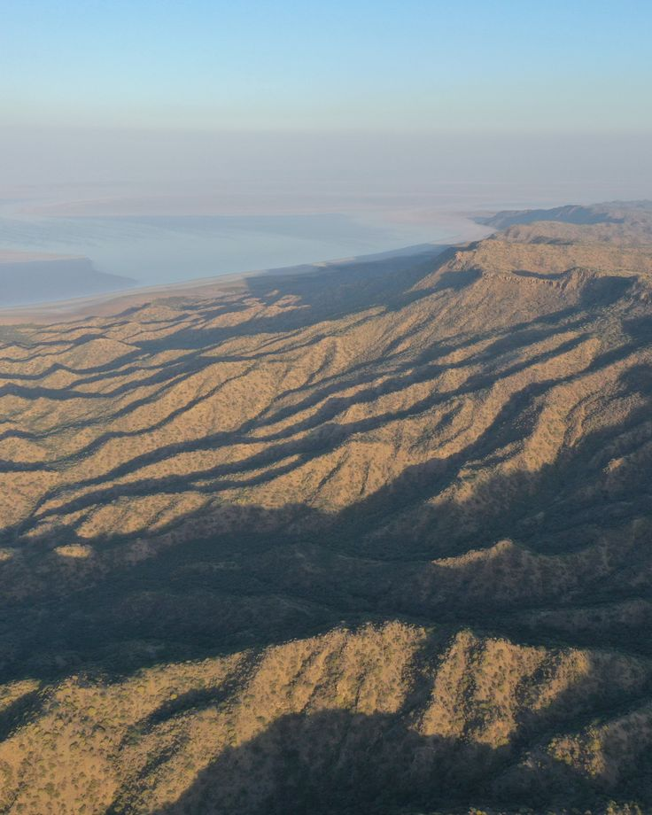
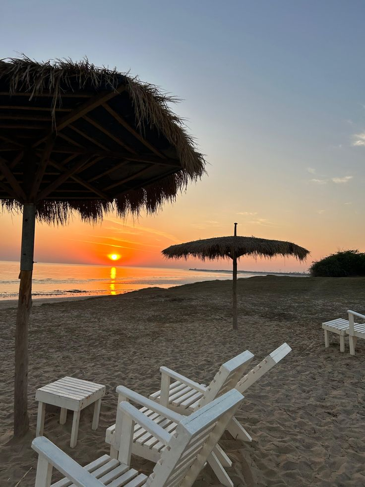
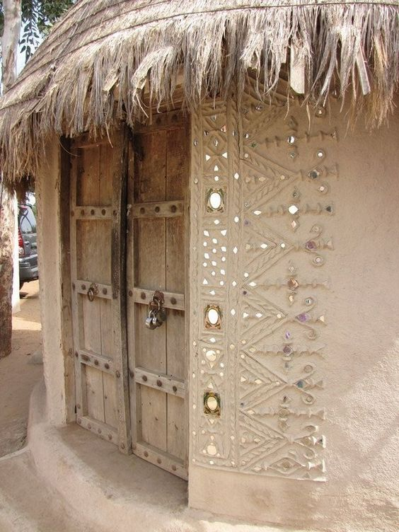
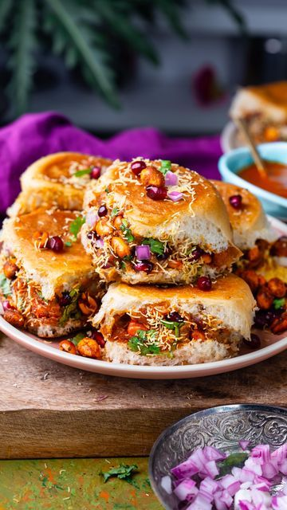
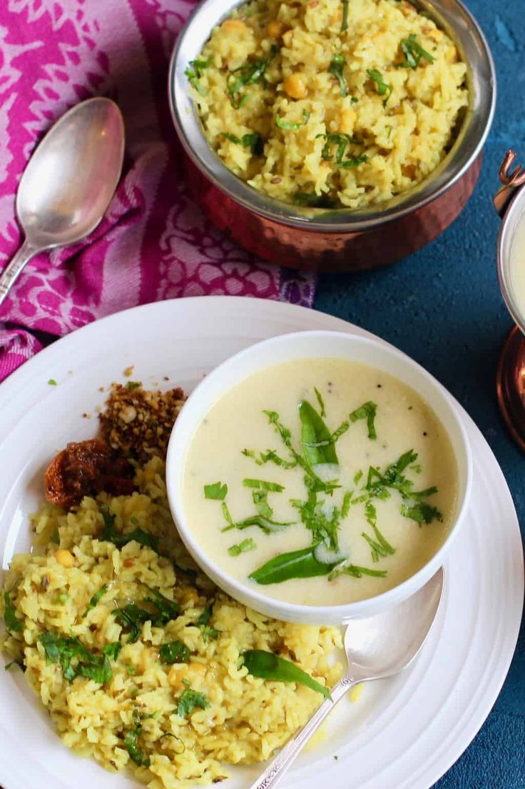
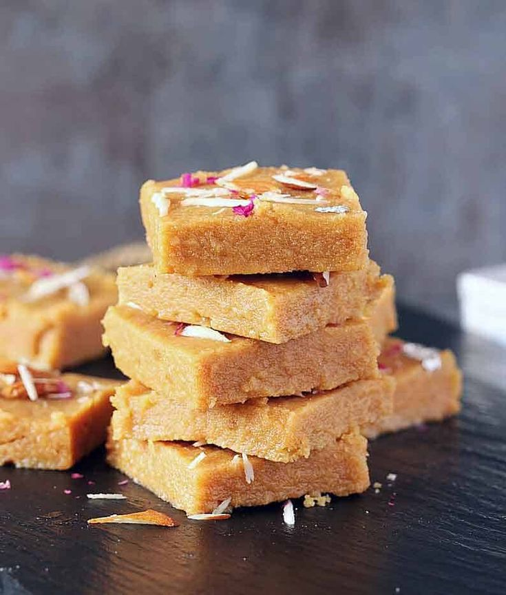
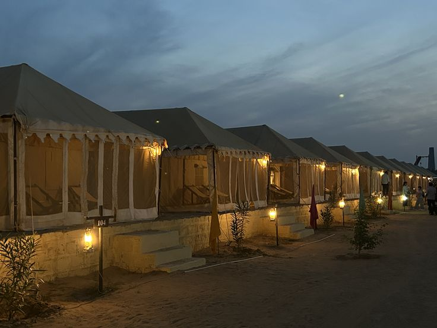
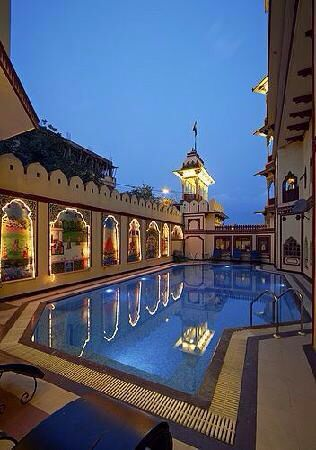

Kutch: Earth's Most Surreal Canvas
The Rann of Kutch is a phenomenon. When the salt crust shimmers under a full moon and stretches to a horizon that doesn't exist — you understand why travellers return here again and again.
But Kutch is more than the Rann. The tribal villages of Bhirandiyara, the flamingo-flocked Chhari Dhand, Dholavira's ancient Indus Valley ruins — this is a civilisation unto itself.





Reaching Kutch
Fly into Bhuj Airport from Mumbai or Ahmedabad. Trains from Ahmedabad to Bhuj run regularly (overnight journey). The Rann Utsav season (Nov-Feb) has special camp packages.
This week in
What to Eat

Kutchi Dabeli
Spiced potato filling in a bun with chutneys and pomegranate — India's best street snack.

Khichdi & Kadhi
Comforting Gujarati staple — mung lentil rice with spiced buttermilk curry.

Gur Papdi
Traditional Gujarati sweet made with wheat flour, ghee, and jaggery.
Places to Stay

Rann Utsav Tent City
Government-run luxury tent city at the edge of the Rann — magical.

Hotel Nilam, Bhuj
Budget city hotel — clean, central, solo-traveller friendly.

Share Your Story
"Full moon night on the Rann. Just me, the white salt, and the Milky Way. I am still not over it."
"Rann Utsav was incredible — the folk musicians, the camel rides, the embroidery workshops. Pure India."
Emergency Contacts
- Bhuj Police: 02832-250060
- Ambulance: 108
- Gujarat Tourism: 1800-200-5090
Desert Safety
- Always carry 2-3 litres of water
- Don't enter restricted border areas
- Go with local guides for Rann night visits
Weather Tips
- Winters can be cold at night (5°C)
- Summers are extreme (45°C+) — avoid Apr–Jun
- Sandstorms possible in summer months